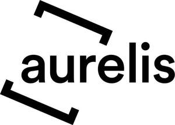

Trade Mark Journal No.2025/020 16 May 2025
UK00004190641 17 April 2025 (6,16,19,35,36,37,42)

- Class 6
- Building and construction materials and elements of metal; Building materials of metal; Framework of metal for building; Roof components of metal; Structures and transportable buildings of metal. .
- Class 16
- Printed matter; Paper and cardboard; Stationery and educational supplies.
- Class 19
- Building and construction materials and elements, not of metal; Doors, gates, windows and window coverings, not of metal; Structures and transportable buildings, not of metal; Statues and works of art made of materials such as stone, concrete and marble, included in the class; Pipes; Asphalt; Pitch and bitumen; Scaffolding and formwork and parts therefor, not of metal; Windows, not of metal; Non-metal window sills.
- Class 35
- Business management; Business administration; Office functions services; Establishment and operation of a database, namely compilation, recording, maintenance and systemisation of information into computer databases; electronic data processing for third parties. .
- Class 36
- Real estate affairs; Building, namely the financial preparation of building projects; Real estate brokers; Rent collection; Facility management, namely development of usage concepts for real estate in respect of financial matters; Facility management, namely real estate management, and brokerage, rental and leasing of real estate; Financial advice; Apartment house management; Management of land; Real estate agency management, real estate management; Capital investment; Real estate appraisal; Loans [financing]; Renting of offices and flats; Financial management, in particular trusteeship; Rental of real estate; Searching for and selection of suppliers and services for real estate owners and residents.
- Class 37
- Construction services; Construction information; Cleaning of buildings [exterior surface]; Building supervision, building monitoring; Roofing services; Building insulating; Building, namely the implementation of building projects; Facility management or infrastructural building management, namely repair, maintenance and servicing of real estate, including permanently connected supply installations therefor, in particular heating and power systems; Scaffolding; Structural and civil engineering; Cleaning of building Interiors; Painting, interior and exterior; Masonry; Rental of construction equipment; Repair and installation services, namely repair and installation in connection with sanitary installations, electric switching installations, apparatus for lighting, heating, refrigerating, drying, ventilating and water supply purposes, window fittings, parts for houses, rafters, wall elements, roof elements, prefabricated residential and recreational houses, commercial buildings, doors, gates, windows and window coverings, roofs and roller blinds, and in connection with parts and fittings for all the aforesaid goods; Services in connection with the installation of preserved, restored and new components in buildings, civil engineering construction through moulding of concrete; Superstructure and civil engineering construction; Assembly of machine installations and framework for building; Maintenance of real estate, industrial installations and components and servicing of buildings and industrial facilities, furniture, furnishings, lighting, floor and wall coverings, ceilings, refurbishment of buildings; Construction consultancy.
- Class 42
- Establishment and operation of a database, namely software programming and server administration for the establishment and operation of a database, and arranging and leasing of access rights to databases, and research and searching in databases for others; Preparation of data processing programmes; Providing computer programs on data networks; Management of data on servers; Architecture (except landscape architecture); Building, namely the technical preparation of building projects; Design of interior decor; Engineering services; Scientific testing services; Providing of technical, geological and scientific expertise; Facility management, namely development of usage concepts for real estate with regard to technical matters; Land surveying; Urban planning; Technical consultancy, Technical project planning and technical project management in the field of electronic data processing; Consultancy services in relation to environmental protection, environmental assessments; Development of usage concepts for real estate, with regard to technical matters; Building promoter services, namely the technical preparation of building projects; Technical project studies; Architectural consultancy; Architecture and Interior fitting-out services; Technical consultancy in the field of the urban environment; Design, updating and maintenance of computer software relating to real estate activities; Research and development (for others); Computer programming; Mechanical research; Providing of expert opinion; Technical drawing; Environmental protection consultancy regarding industrial analysis and research services; Design and development of computer hardware and computer software. .
Aurelis Real Estate GmbH
Representative: Trowers & Hamlins LLP